An outdoor AR experience designed for the newly reopened National Museum of History, turning the courtyard into a gamified exploration space — led by a mascot character who guides visitors through unlocking their own museum journey, one corner at a time.
After reopening, the museum wanted its outdoor courtyard to be more than a pass-through space — a place where families and younger visitors would actually want to stop and engage — without disrupting the dignified atmosphere befitting its collection and architecture.
I designed 4 AR interactive levels led by a mascot guide character, letting visitors unlock each corner of the courtyard in sequence, and took on the museum's existing app feature-module extension requirements so the new experience would integrate naturally into the system already in place, rather than shipping as a bolted-on separate app.
The courtyard went from a pure circulation space to somewhere visitors actively chose to stop and engage: the 4 AR levels and 6 hidden discovery points gave people a clear reason to explore, while preserving the dignified atmosphere around the collection and architecture — hitting both original goals and putting the museum's cultural content in front of a younger generation in a lighter, more interactive way.
The outdoor mascot adventure spans three outdoor levels — koi, photo, and lantern — plus one indoor hidden-discovery level, with the mascot guiding visitors through unlocking every corner of the courtyard.
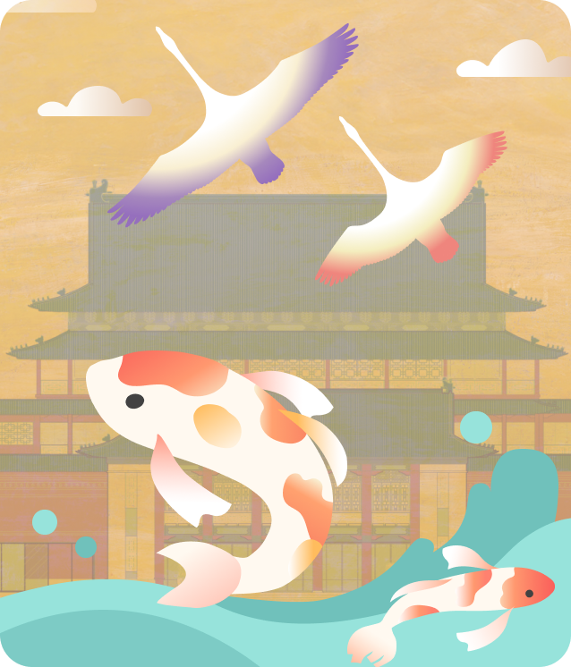
Use AR to net koi and birds swimming through the courtyard pond — tap to collect good-luck cards.

AR photo compositing — pose alongside the mascot character and collage the shots as a keepsake.

Draw and release an AR sky lantern — sketch a pattern or write a wish, then watch it drift skyward.
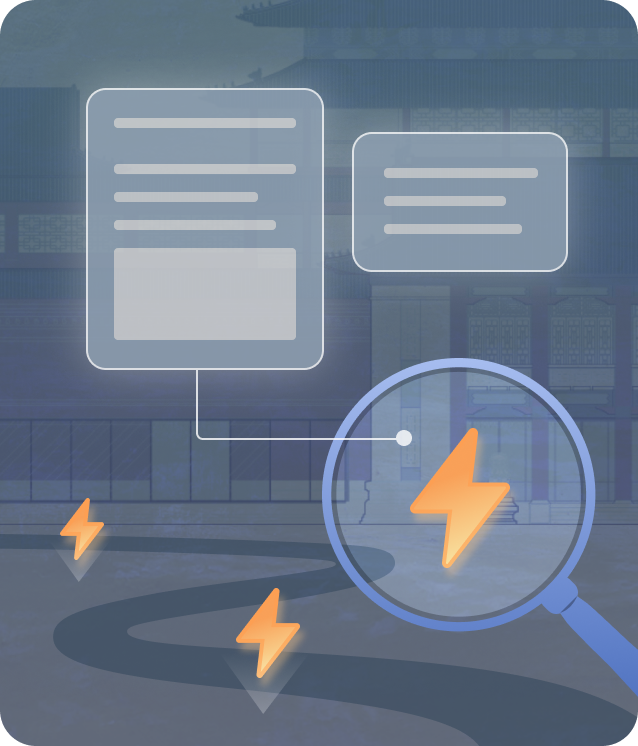
An AR magnifying-glass search — walk through each corner of the courtyard to find hidden artifact info points.
From the courtyard entrance to all four AR levels — the actual screens as the mascot guides visitors through the National Museum of History.
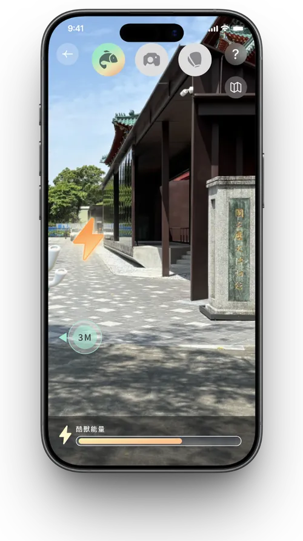
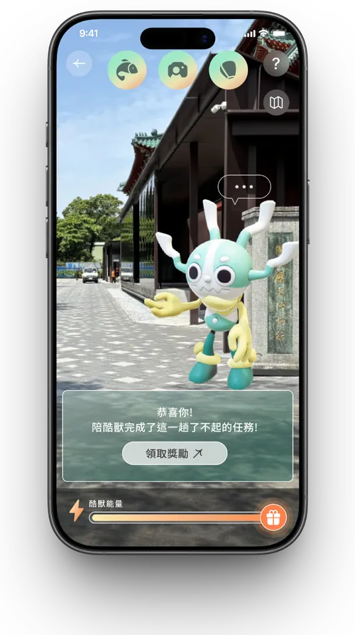


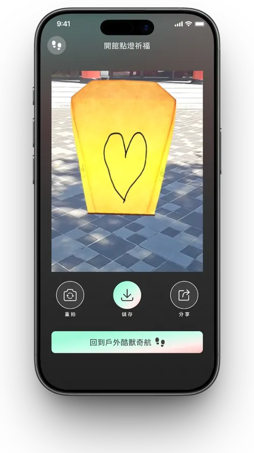
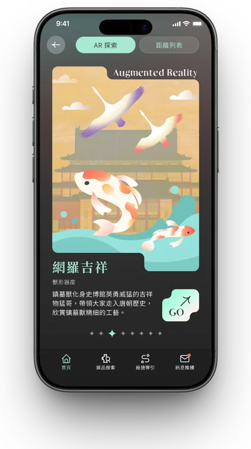
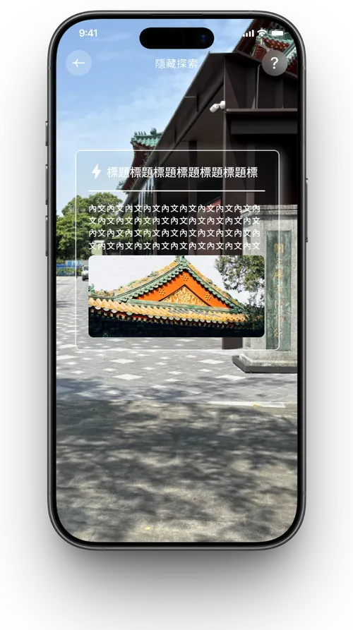
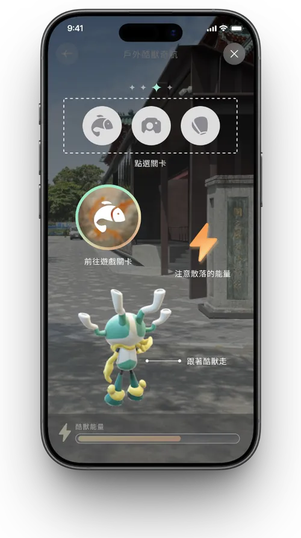
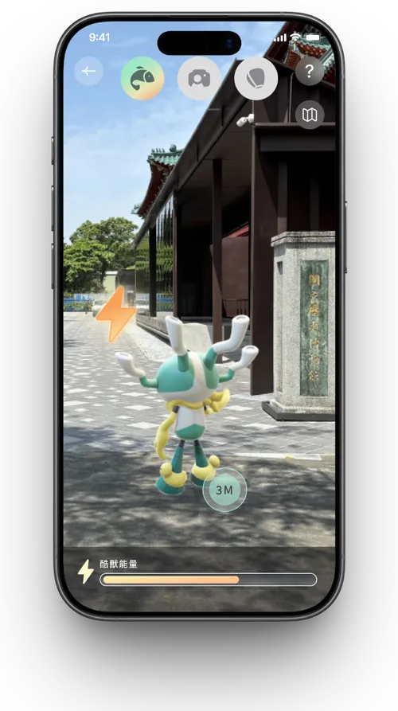
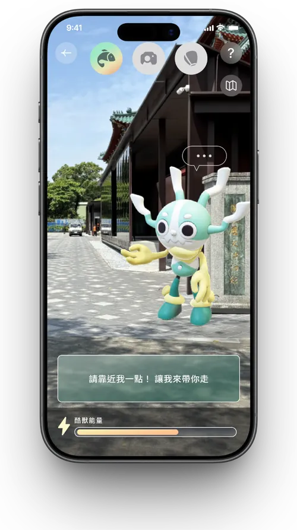
The full user flow diagram for the mascot's AR guide levels, covering the branching logic across "guided / free exploration / hidden discovery" modes and the transitions between every screen.
Move your cursor to preview detail · click to view full size

Scroll or drag to view the full flow diagram in detail
Photos from the museum's outdoor courtyard, plus walkthrough recordings of the AR experience live in use.
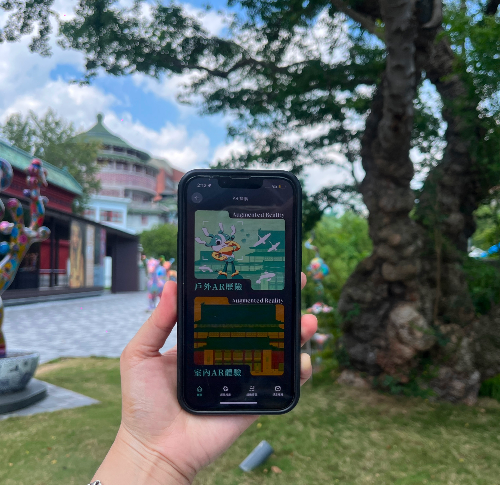
AR exploration menu · in use beside a courtyard sculpture Catching the interactive koi · receiving a blessing card
Catching the interactive koi · receiving a blessing card
 Mascot group photo · completed collage
Mascot group photo · completed collage
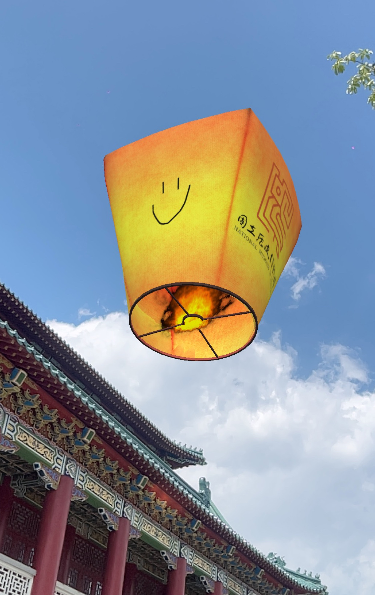
Release a Wish · AR sky lantern release